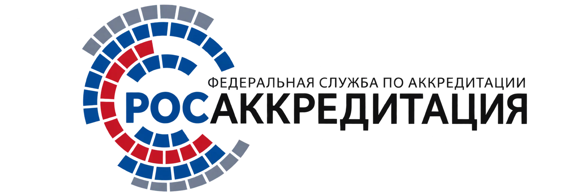
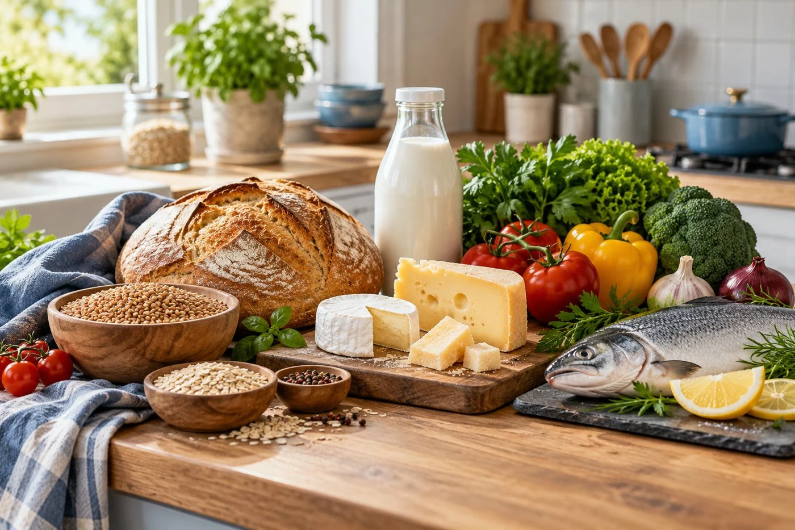
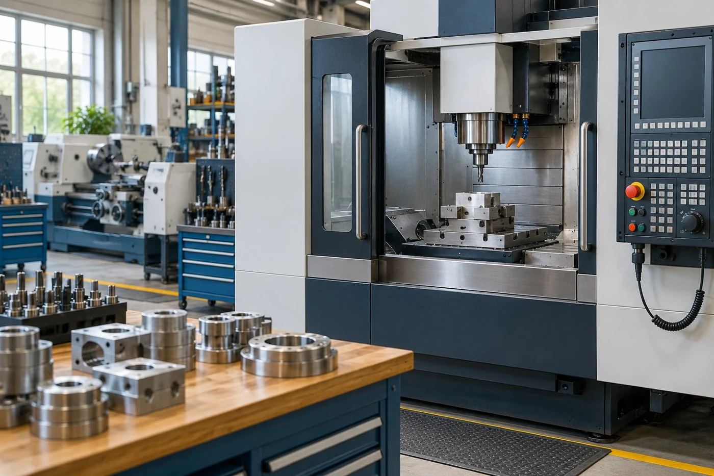
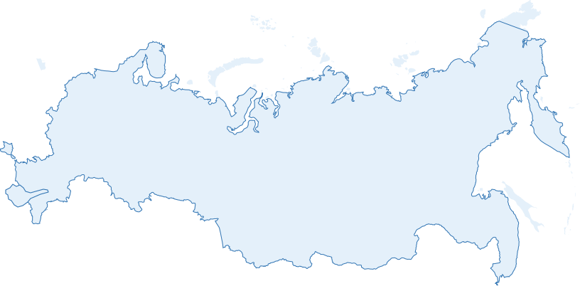

Декларирование
Подбираем аккредитованные лаборатории и организуем проведение испытаний.
Подробнее →Подбираем исполнителей и сопровождаем оформление документов — от первого вопроса до результата.
Оформляемые с нашим сопровождением обязательные сертификаты и декларации регистрируются в официальных реестрах соответствующей страны. Здесь можно выбрать реестр и перейти к проверке вашего документа.

Росаккредитация ↗Россия · сертификаты и декларацииЕдиное окно Кыргызстана ↗Документы ТР ТС / ЕАЭСРезультат и актуальный статус документа отображаются на сайте официального реестра. VFC-TEST не является государственным реестром. Отсутствие записи в поиске само по себе не означает аннулирование документа.
Документ аннулирован, приостановлен или срок действия истёк? Бесплатно проконсультируем, разберёмся в ситуации и поможем оформить новый документ, если это необходимо.
Получить бесплатную консультацию →Подбираем аккредитованные лаборатории и организуем проведение испытаний.
Подробнее →Подбираем аккредитованные лаборатории и организуем проведение испытаний.
Подробнее →Подбираем аккредитованные лаборатории и организуем проведение испытаний.
Подробнее →Подбираем аккредитованные лаборатории и организуем проведение испытаний.
Подробнее →

Один менеджер сопровождает оформление — от первых сведений до готовых документов.
Как проходит работа →
Сопровождаем проекты дистанционно. Подбираем профильных партнёров под вашу продукцию и задачу.
От первого вопроса до готового результата мы остаемся на связи. А о том, как это происходит, лучше всего расскажут наши клиенты.
Опишите товар и прикрепите документы в одной форме. Мы уточним требования и предложим порядок оформления.